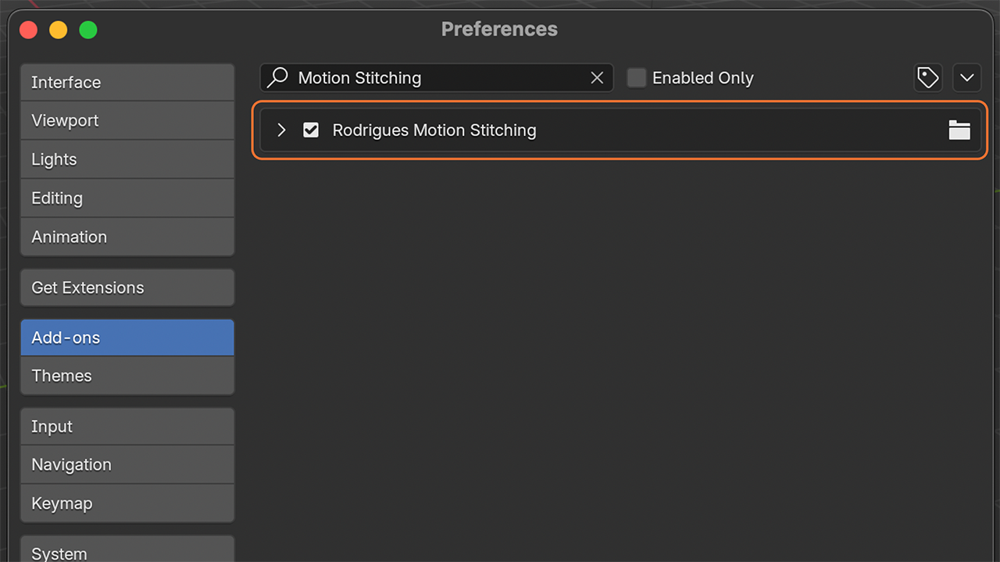
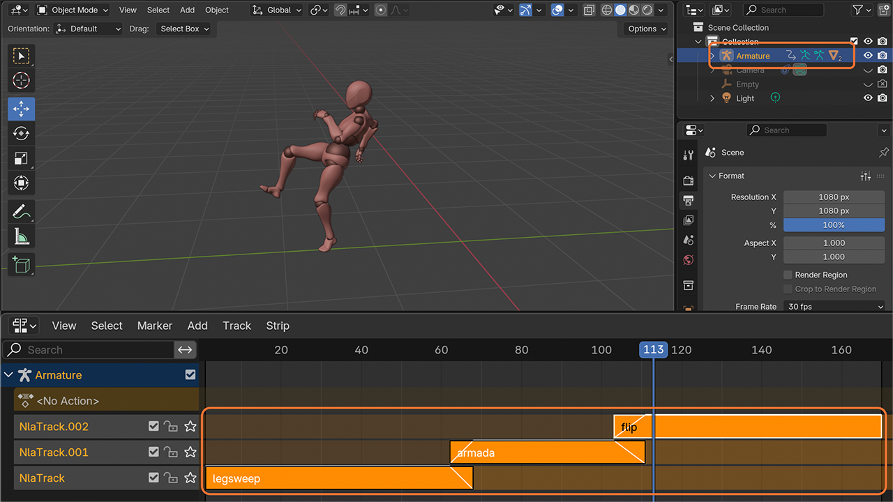
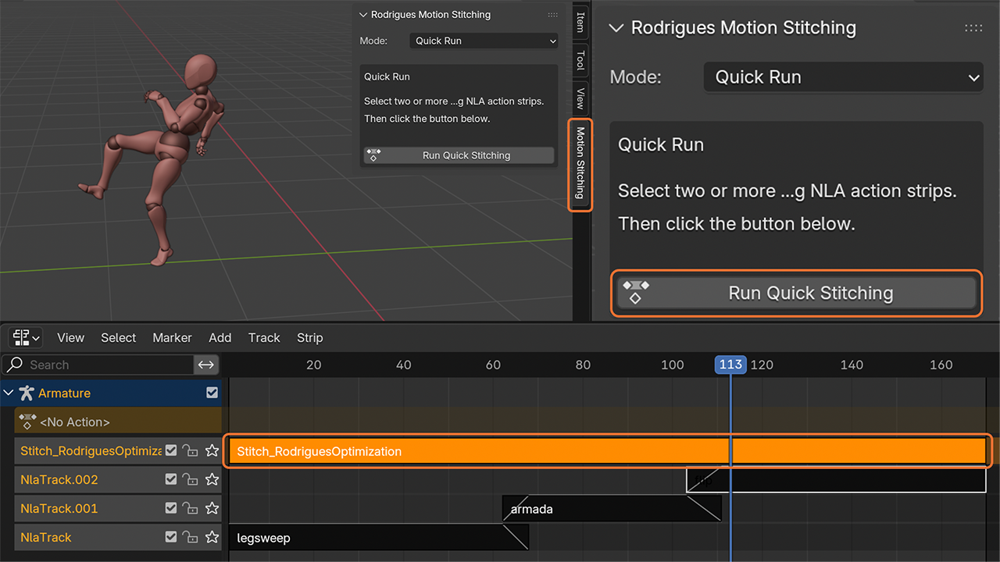
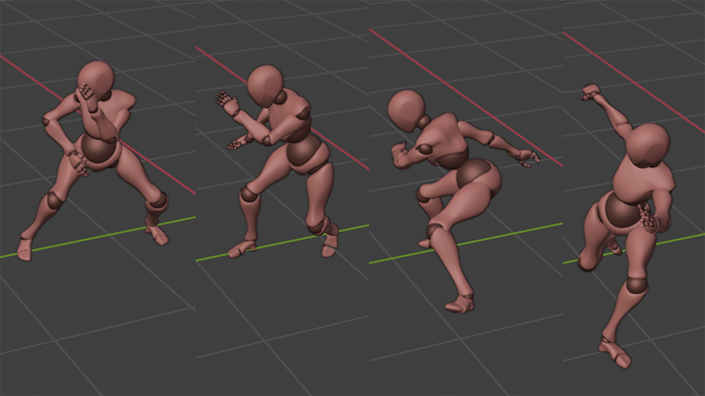

This page provides the initial public release of the Blender add-on for trying Rodrigues-based motion stitching. The add-on is distributed as a ZIP file and can be installed from Blender's add-on preferences.
rodrigues-motion-stitching-v0.1.0.zip using the Download button
at the top of this page.



